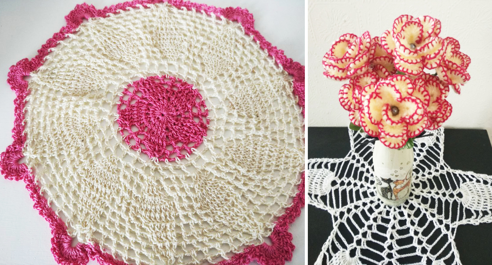
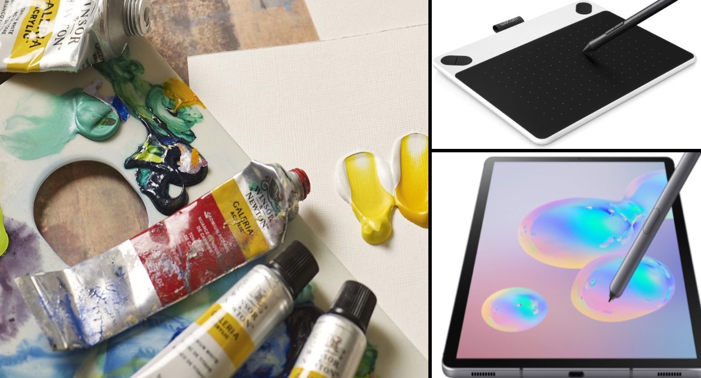
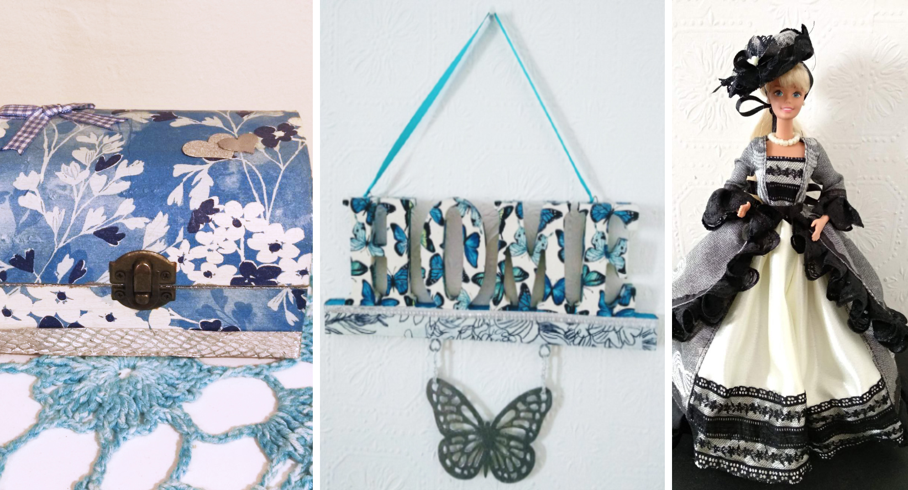

It's something I've been doing since I was 10 years old, and my grandmother was who taught me. Nowadays, my house is full of crochets made by me.
When I have time and feel inspired, I like drawing on my tablet or using my pc with a graphic tablet. My favourite software that I enjoy using are the following: Krita, Ibis paint, Affinity Designer, Adobe Illustrator and Photoshop. I also like painting in the traditional way, either with oil paints or acrylics.
In general I'm a very creative person and I enjoy creating things with my hands. I've made different things from jewellery boxes to custom dolls. About custom dolls, I have a YouTube channel about it with more than 15.000 subscribers.
